Press kit
Fruity Fauna is a tap-to-match fruit puzzle game starring 36 real animals whose rarity follows their real conservation status. Made by one developer in the Philippines. Big update: 1 December 2026.
Download everything (.zip, 40.1 MB) Trailer (YouTube) Trailer (MP4) Press contact
Factsheet
- Developer
- Wyli (solo developer), based in the Philippines
- Release date
- Out now. Originally released 31 May 2024.
Big update: 1 December 2026 - Embargo
- Update news: 1 December 2026, 09:00 Philippine time (01:00 UTC)
- Platforms
- App Store (iPhone, iPad) · Google Play (Android)
- Price
- Free to play, with optional in-app purchases and ads
- Genre
- Casual puzzle (tap-to-match) with collectible real animals
- Content
- 36 real animals · 13 habitats · 685 lines of animal dialogue
- Play style
- Portrait, one hand. Core puzzles play offline.
- Language
- English
- Website
- wyliolivete.github.io/game-fruityFauna.html
- Press contact
- official.wyliolivete@gmail.com
- Social
- Instagram @official.wyliolivete
Description
Copy and paste freely.
One line
Fruity Fauna is a tap-to-match fruit puzzle game starring 36 real animals whose rarity follows their real conservation status.
Short (about 75 words)
Fruity Fauna is a free tap-to-match puzzle game for iPhone, iPad and Android, made by Wyli, a solo developer in the Philippines. Players match fruit to satisfy the Cravings of 36 real animals, from a chatty Toco Toucan to a Critically Endangered Bornean Orangutan, each in a habitat based on its real home. Winning builds Affection, which unlocks each animal's story, told in its own words. And the rarer an animal is in the wild, the rarer it is in the game.
Long (about 200 words)
Fruity Fauna is a colorful tap-to-match puzzle game starring 36 real animals, each living in one of 13 illustrated habitats based on its real-world home. Players tap groups of matching fruit to satisfy an animal's Cravings, and every win ends in a Gold Rush that turns the board to coins.
Every animal has its own voice. Across 685 lines of Bestiary dialogue, they tell players about their lives in their own words: a toucan who won't stop talking about his bill, a binturong who smells like buttered popcorn, a budgie still practicing his words. Each win builds Affection, which unlocks more of their story and grows stronger flowers on the board.
The game's rarity system follows the IUCN Red List. Least Concern animals visit often, while Critically Endangered ones such as the Bornean Orangutan and the Western Gorilla are rare sights, so filling the Bestiary from Common to Legendary mirrors which species are most at risk in the wild.
Fruity Fauna was first released in 2024. The big update on 1 December 2026 rebuilds the game around its animals. Wyli, a solo developer from the Philippines, made the game alone: code, art, design and sound.
The big update · 1 December 2026
- 36 animals, each with their own personality and Bestiary story (685 lines in total)
- Affection: winning an animal over unlocks more of its story and grows stronger flowers
- 13 newly drawn habitats based on each animal's real-world home
- Bestiary tiers and spawn rates that follow real IUCN Red List status
- Energy removed: unlimited play
- Global win-streak leaderboard and short Friend Codes
- Currencies renamed (Gold → Coins, Diamonds → Gems); habitat decorating retired
Features
- Tap-to-match fruit puzzles with cascades, flowers that spread across the board, and a Gold Rush finale after every win
- 36 real animals, from the Toco Toucan to the Riverine Rabbit, each with their own voice
- Stories told in their own words, inspired by how each animal really lives
- Rare in the wild, rare in the game: rarity tiers follow the IUCN Red List
- 13 researched habitats, from rainforest canopy to desert scrub
- Play anywhere: core puzzles work offline; sign in only for cloud backup and friends
The animals
All 36 species with the IUCN Red List status used in the game and the Bestiary tier it maps to. Spawn weights: Least Concern 5, Near Threatened 4, Vulnerable 3, Endangered 2, Critically Endangered 1.
| Animal | IUCN status | Bestiary tier |
|---|---|---|
| Asian Koel | Least Concern | Common |
| Bearded Dragon | Least Concern | Common |
| Bohemian Waxwing | Least Concern | Common |
| Budgerigar | Least Concern | Common |
| Channel-Billed Cuckoo | Least Concern | Common |
| Double-Toothed Barbet | Least Concern | Common |
| Eclectus Parrot | Least Concern | Common |
| Epauletted Fruit Bat | Least Concern | Common |
| Green Iguana | Least Concern | Common |
| Pygmy Treeshrew | Least Concern | Common |
| Siberian Chipmunk | Least Concern | Common |
| Southern Cassowary | Least Concern | Common |
| Tambaqui | Least Concern | Common |
| Thick-Billed Green Pigeon | Least Concern | Common |
| Toco Toucan | Least Concern | Common |
| Virginia Opossum | Least Concern | Common |
| Black Howler Monkey | Near Threatened | Rare |
| Garden Dormouse | Near Threatened | Rare |
| Grizzled Giant Squirrel | Near Threatened | Rare |
| Red-Throated Barbet | Near Threatened | Rare |
| Binturong | Vulnerable | Epic |
| Black Hornbill | Vulnerable | Epic |
| Grey-Headed Flying Fox | Vulnerable | Epic |
| Red-Faced Spider Monkey | Vulnerable | Epic |
| Red-Footed Tortoise | Vulnerable | Epic |
| Rhinoceros Hornbill | Vulnerable | Epic |
| Bonobo | Endangered | Endangered |
| Chimpanzee | Endangered | Endangered |
| Malayan Tapir | Endangered | Endangered |
| Ring-Tailed Lemur | Endangered | Endangered |
| Sun Conure | Endangered | Endangered |
| Bornean Orangutan | Critically Endangered | Legendary |
| Crested Black Macaque | Critically Endangered | Legendary |
| Riverine Rabbit | Critically Endangered | Legendary |
| Western Gorilla | Critically Endangered | Legendary |
| White-Cheeked Gibbon | Critically Endangered | Legendary |
Videos & GIFs
Vertical trailer, 27 s · MP4 1080×1920 · 20.4 MB
▶ Watch on YouTube Embed or share: https://youtube.com/shorts/6uZnZDVXqlI
GIFs, sized for Discord, Reddit and articles:


Screenshots
Clean in-game captures at 2160×3840, without captions.

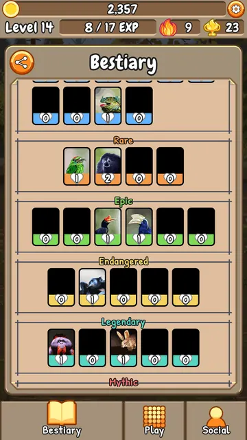
FruityFauna_Bestiary_RarityTiers.jpg · 634 KB
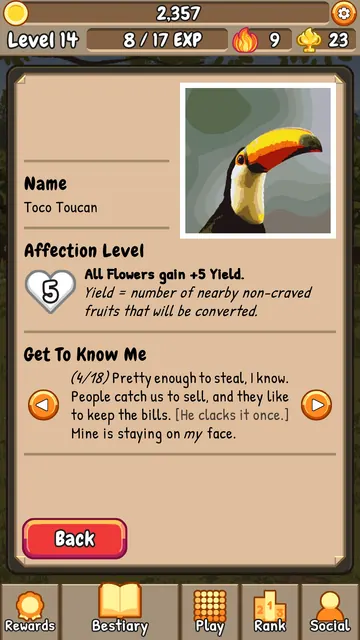
FruityFauna_Bestiary_ToucanStory.jpg · 506 KB
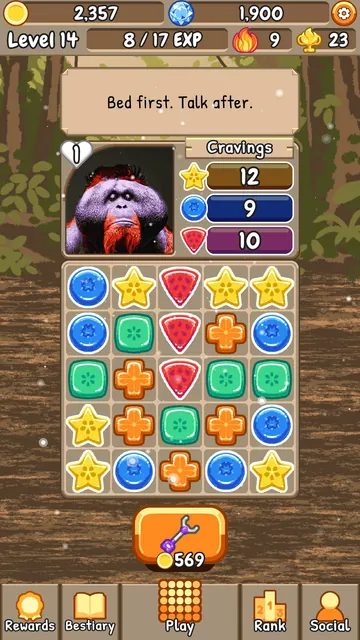
FruityFauna_Gameplay_BorneanOrangutan.jpg · 963 KB
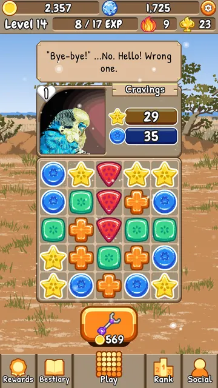
FruityFauna_Gameplay_Budgerigar.jpg · 915 KB
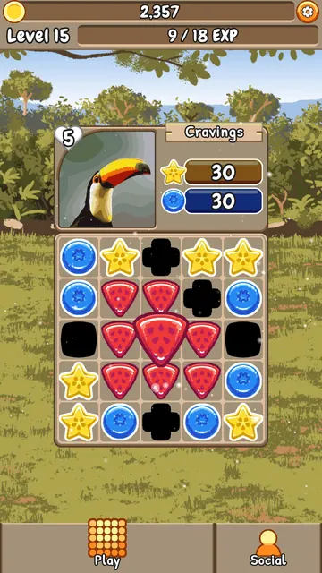
FruityFauna_Gameplay_FlowerSpread.jpg · 882 KB
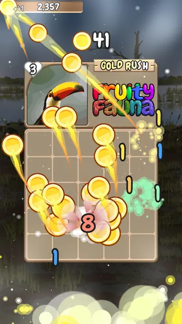
FruityFauna_Gameplay_GoldRush.jpg · 618 KB
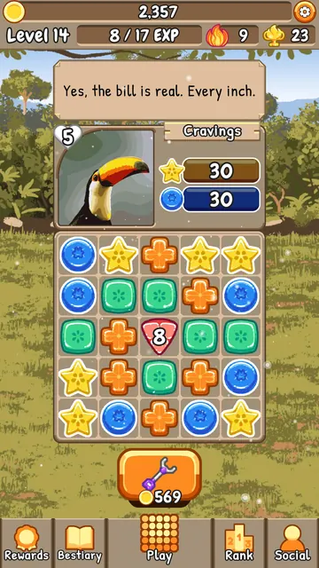
FruityFauna_Gameplay_TocoToucan.jpg · 925 KB
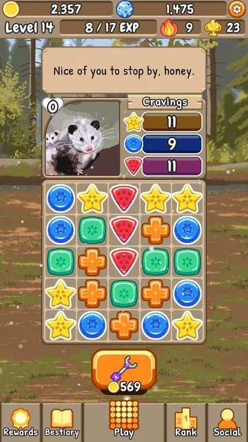
FruityFauna_Gameplay_VirginiaOpossum.jpg · 928 KBStore screenshots (with captions)

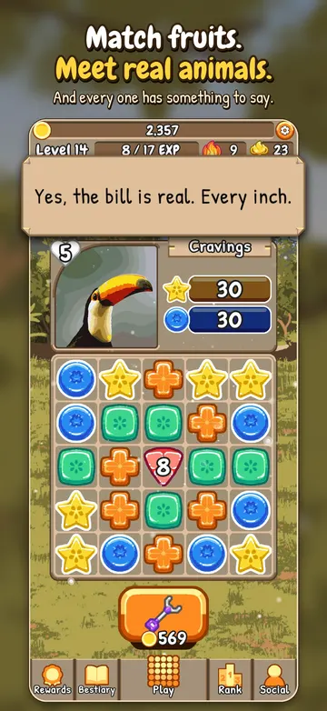
FruityFauna_Store_01_hero.png · 2.8 MB
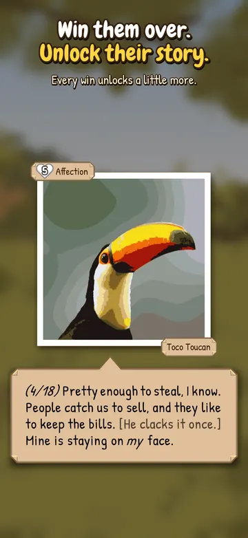
FruityFauna_Store_02_story.png · 1.1 MB
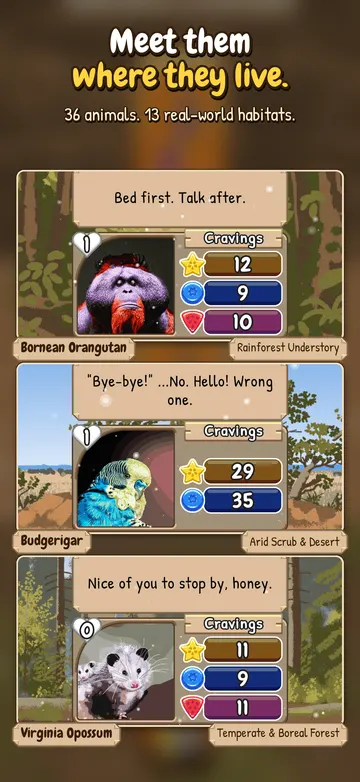
FruityFauna_Store_03_habitats.png · 2.2 MB
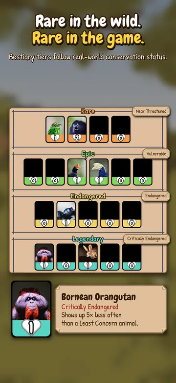
FruityFauna_Store_04_rarity.png · 1.3 MB
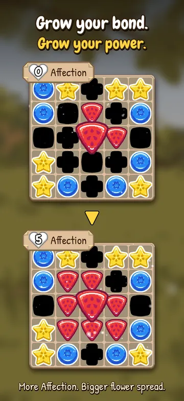
FruityFauna_Store_05_flowers.png · 2.2 MB
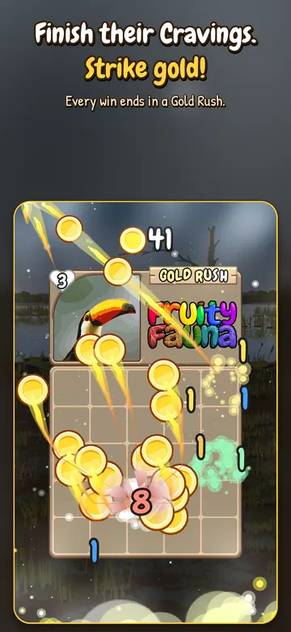
FruityFauna_Store_06_goldrush.png · 2.1 MBKey art
With and without the logo, so you can crop freely.

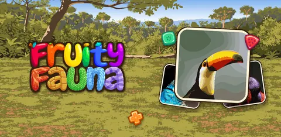
FruityFauna_Banner_1024x500.png · 818 KB
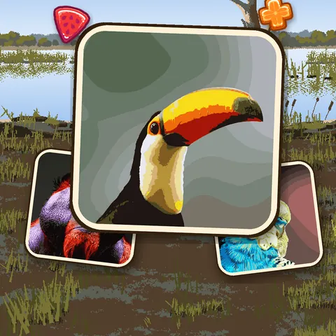
FruityFauna_KeyArt_1080x1080_NoLogo.png · 1010 KB
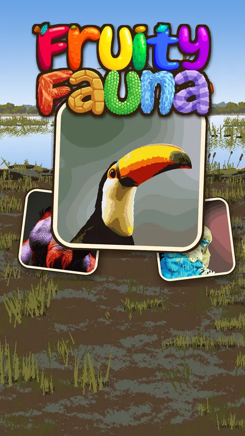
FruityFauna_KeyArt_1080x1920_Logo.png · 1.8 MB
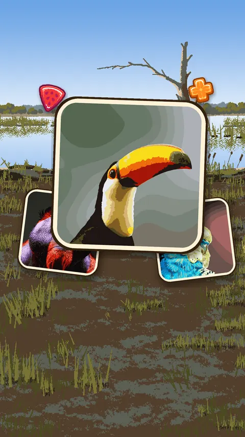
FruityFauna_KeyArt_1080x1920_NoLogo.png · 1.6 MB
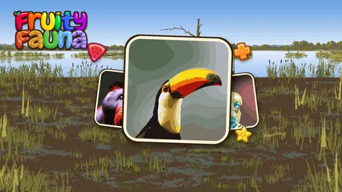
FruityFauna_KeyArt_1920x1080_Logo.png · 1.1 MB
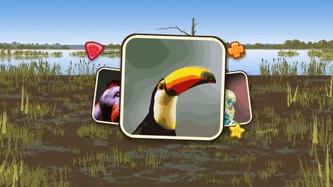
FruityFauna_KeyArt_1920x1080_NoLogo.png · 990 KB
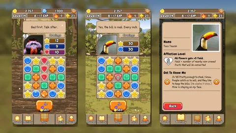
FruityFauna_Screens_1920x1080.png · 1.7 MBLogos & icon


For streamers & video creators
You're welcome to stream, record and monetize videos of Fruity Fauna on YouTube, Twitch, TikTok and anywhere else. No need to ask. A link to the game is always appreciated.
Brand fonts: Chewy (headlines) and Patrick Hand (subheads), both free.
Colors: ink #34200E, gold #FFD440, cream #FFF2D7.
About Wyli
Wyli is a solo game developer from the Philippines with more than 12 years of experience making games. Wyli handles every part of each game, from code and art to design and sound. Fruity Fauna is a personal project: every animal and habitat in it was researched so that what players learn while they play is accurate.
Wyli press kit · wyliolivete.github.io
Credits
Game design, programming, art and audio: Wyli
Contact
- Press & business
- official.wyliolivete@gmail.com
- Interviews, preview builds
- Email the address above. Interviews are welcome.
- Player support
- service.wyliolivete@gmail.com
- @official.wyliolivete